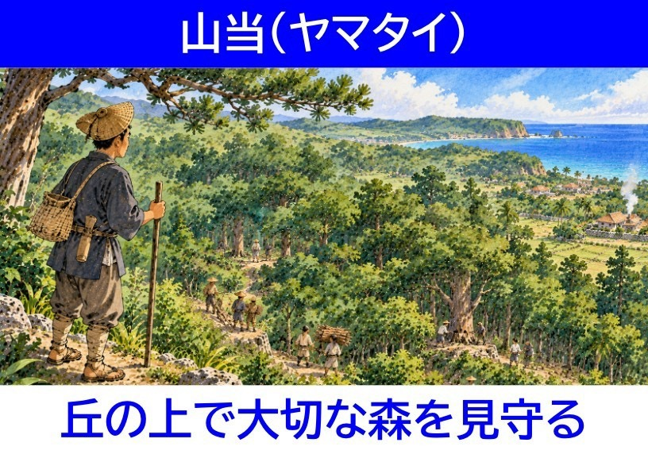
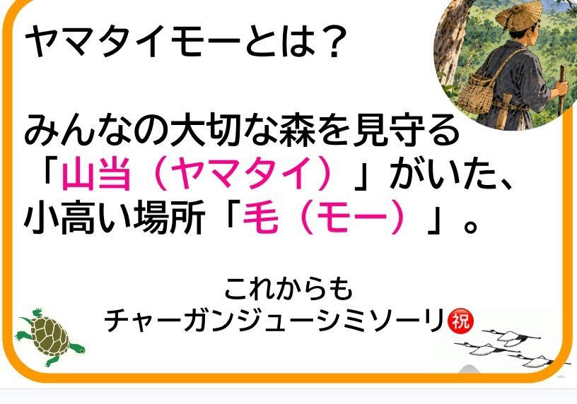

2026年11月18日 ・ #01
庭の草取り・カズラ除去のお手伝い
地域の方から相談を受け、メンバーがその日のうちに対応しました。花や木を残しながら庭を整理しました。
回収量：燃えるゴミ袋2袋分、カズラ1山。
沖縄県読谷村 横田・親志地区
横田・親志地区で、身近な困りごとを手伝う活動をしています。こちらでは日々の活動やお知らせをご紹介します。
地域の方から相談を受け、メンバーがその日のうちに対応しました。花や木を残しながら庭を整理しました。
回収量：燃えるゴミ袋2袋分、カズラ1山。
🕖 時間：19:00〜
📍 場所：未定
ヤマタイモーお助け隊は、横田・親志地区で、できる人が、できる時に、できる範囲で手伝うサークルです。物価高や詐欺など、暮らしの身近な困りごとについて、地域で知恵を出し合います。
日用品などの共同購入や、暮らしの工夫を共有する取り組み。
暮らしの中のちょっとした困りごとを、地域の仲間同士でお手伝いします。
季節家電の組み立てや片付けのお手伝い。
既設の引掛シーリングを使う、配線工事を伴わない安全な範囲の作業。
電池交換や家電の基本操作のお手伝い。
無理のない範囲で庭のお手入れ。
活動レポートを見る →できる人が、できる時に、できる範囲で。専門資格が必要な作業、電気配線工事、危険な高所作業などは行いません。
地域でお互いを気にかける取り組み。
2026年6月28日（日）開催
過去の説明会の案内です。
3枚の絵で、琉球王国の森林管理からヤマタイモーの名前の由来をご紹介します。

